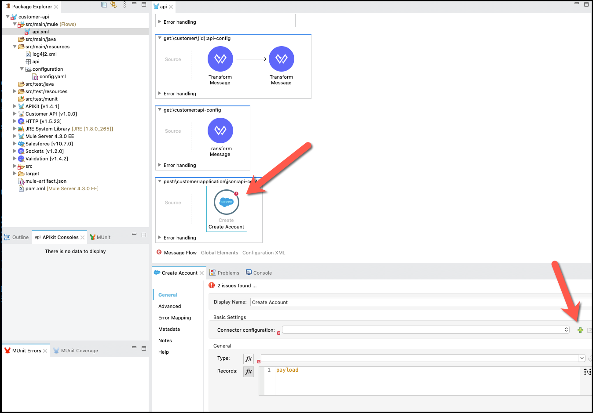

Nesta etapa, criaremos uma nova aplicação Mule no Anypoint Studio a partir da definição de RAML da API Omni Channel. Esta será a implementação da nossa API REST.
- Inicie o Anypoint Studio a partir do ícone da área de trabalho.

- Ao abrir o Studio pela primeira vez, será solicitado o workspace onde os projetos serão salvos. Selecione aquele que vem por padrão.

- Você verá a tela de boas-vindas do Anypoint Studio 7.

- Role até a parte inferior se quiser saber mais sobre o Studio. Depois disso, pressione Continue to Studio.
- No menu do Anypoint Studio, selecione File> New> Mule Project para criar um novo projeto Mule. Uma janela aparecerá para definir os detalhes desta nova aplicações.

- Dê ao projeto o nome omni-channel-api-v1
- Selecione o Mule Server 4.3.0 EE.
- Em Import a Published API , vamos importar a RAML Spec do Exchange. Clique em
 e selecione from Exchange.
e selecione from Exchange. - Você verá uma lista com todas as APIs, selecione Customer API e pressione Add.

- Pressione Finish.
- Verifique se está tudo correto. Certifique-se de que o Scaffold flows from theses API specifications esteja marcado. Pressione Finish.

- APIkit cria seu novo projeto Anypoint Studio com uma implementação gerada com base em sua especificação de API. A configuração gerada implementa o Listener HTTP de entrada, bem como todos os recursos, metadados de tipo de dados de solicitação / resposta, entre outras coisas.
- Para testar a API, vamos executá-la no Studio. Clique com o botão direito do mouse na aplicação na visualização do Package Explorer.
- Selecione Run as> Mule Application.
- Cada vez que iniciamos a aplicação, precisamos ter certeza de que ele foi iniciado com sucesso. Verifique na guia Console se o projeto aparece como "DEPLOYED".
- Assim que a aplicação for deployada , o Anypoint Studio abrirá uma guia com os Consoles do APIkit onde podemos testar a aplicação (para acessar o console, basta clicar no link para abrir o console do Costumer API em um navegador).

- Clique na guia POST e teste a criação do cliente.
- No campo Accept, preencha com
application / json - Pressione o botão SEND.
- Role para baixo no terceiro painel e você verá a resposta de amostra definida na especificação da API.
- Vá para a guia do console e pressione o botão vermelho para parar o servidor de runtime Mule.

As etapas que precisam ser executadas são:
- Com visualização da API selecionada, clique no botão Add module
 para entrar na Mule Palette e adicionar o módulo Salesforce Connector.
para entrar na Mule Palette e adicionar o módulo Salesforce Connector.
- Arrastar e soltar o Conector Salesforce.

- No final, a paleta deve ser semelhante à imagem a seguir.
- Agora, você está pronto para implementar a operação de recurso GET. Encontre o get: \ customer: application \ json:api-config fluxo de recursos(na parte inferior da visualização da api )
- A partir da Mule Palette, selecione Salesforce, role para Query e arraste e solte o componente para o fluxo, antes do componente Transform Message.
- Clique no ícone do Salesforce e a configuração será mostrada abaixo.
- Mude seu nome para
Query Account - Clique no botão
 Save All.
Save All.
- Agora que você definiu suas propriedades, vamos definir uma nova configuração de conector. Volte para a guia Fluxo de mensagens onde você largou anteriormente o conector do Salesforce e selecione-o.

- Clique no botão em Configuração do Conector.
- Para a configuração do conector vamos colocar as seguintes propriedades:
- username:
demos+mythical_lab@mulesoft.com - password:
******** - SecurityToken:
************************
- Pressione Test connection... para verificar se tudo está certo.
- Pressione OK (2 vezes).
- Clique no botão Save all.
Vamos configurar o conector Salesforce para consultar uma conta. Continuamos no Painel Salesforce.
- Dentro do painel do conector do Salesforce, copie e cole a consulta no Salesforce query: na seção General.
Este é o código de mapeamento que a imagem mostra. Você pode copiar e colá-lo no seu
SELECT Name, BillingStreet, BillingCity, BillingState, BillingPostalCode, BillingCountry, BillingLatitude, BillingLongitude, BillingGeocodeAccuracy, Phone, AccountNumber
FROM Account
WHERE BillingCountry = 'BR' - Clique em Transform Message, você verá uma transformação Dataweave, nos painéis de entrada e saída. Você pode arrastar e soltar cada campo da solicitação (objeto Salesforce) para a saída.
- Este é o código de mapeamento que você pode usar. Você pode copiar e colar em seu editor de texto Dataweave e a UI refletirá as alterações
%dw 2.0
output application/java
---
[{
Name: payload.name,
BillingStreet: payload.billingAddress.address1,
BillingCity: payload.billingAddress. cidade,
BillingState: payload.billingAddress.state,
BillingPostalCode: payload.billingAddress.postalCode,
BillingCountry: payload.billingAddress.country,
ShippingStreet: payload.shippingAddress.address1,
ShippingCity: payload.sAddress.Address.city,
ShippingState: payload.sAddress.Address.hipping.sate
ShippingPostalCode: payload.shippingAddress.postalCode,
ShippingCountry: payload.shippingAddress.country,
Phone: payload.phone,
AccountNumber: uuid (),
Account_Email__c: payload.emailbotão
}]- Clique no botão Save All.
- Assim que a aplicação for deployada, o Anypoint Studio abrirá uma guia com os Consoles do APIkit onde podemos testar a aplicação (para acessar o console, basta clicar no link para abrir o console da Costumer API em um navegador).
- Clique na aba GET e teste a consulta de clientes.
- Pressione o botão Send.
- A solicitação retornará 200 OK, seguido por uma lista das contas.
- Parabéns, a aplicação está rodando com sucesso! Em minutos, uma integração com o Salesforce foi criada usando uma arquitetura API moderna.
- Agora, você está pronto para implementar a operação de recurso POST. Encontre o fluxo de recursos post:\customer:application:\json:api-config(na parte inferior da api da visualização)
- Exclua a etapa gerada Transform Message que retornou a resposta de amostra da especificação da API.
- Na Paleta Mule, selecione Salesforce, role para Create, arraste e solte o componente no fluxo.
- Clique no ícone Salesforce e a configuração será mostrada abaixo.
- Mude seu nome para
Create Account - Clique no botão Save All.
É uma boa prática criar um arquivo de configuração para conter todas as propriedades parametrizadas no projeto. Vamos criar um e configurar as credenciais de conexão para nossa implementação de API. Primeiro, vamos criar uma pasta e, em seguida, criar o arquivo de configuração.
- Clique em src / main / resources na aba Package Explorer, clique com o botão direito e crie um New → Folder, nomeie-a como configuration e clique em Finish
- Clique em src / main / resources / configuration na Package Explorer visualização, clique com o botão direito e crie um New → File, nomeie-o config.yaml e clique em Finish.
Copie o seguinte conteúdo para config.yaml. Estas são as credenciais de conexão que sua API usará para o conector Salesforce.
sfdc:
username: "demos+mythical_lab@mulesoft.com"
password: "********"
securityToken: "************************"- Para finalizar a configuração do arquivo de propriedades para sua API, clique na aba API e clique na guia Global Elements.
- Clique em Create, procure properties, selecione Configuration Properties e clique em OK. insira config.yaml no File: attribute e clique em OK.
- Clique no botão Save All.
- Agora que você definiu suas propriedades, vamos definir uma nova configuração de conector. Volte para a guia Message Flow onde você deixou anteriormente o conector do Salesforce e selecione-o.
- Clique no botão em Configuração do Conector.
 - Para a configuração do conector vamos colocar as seguintes propriedades:
- username:
${}sfdc.username - password:
${}sfdc.password - SecurityToken:
${}sfdc.securityToken
- Pressione Test Configuration... para verificar se tudo está no lugar.
- Pressione OK (2 vezes).
- Clique no botão Save all.
Vamos configurar o conector do Salesforce para criar uma conta. Continuamos no Painel Salesforce.
- Adjacente ao Type: property,clique no botão atualizar e selecione Account.
- Remova a palavra payload no campo Record e pressione Refresh Metadata.
Agora que configuramos o conector do Salesforce, precisamos criar um mapeamento que converterá a mensagem JSON da solicitação para o objeto da conta que será salvo no Salesforce. - Dentro do painel do conector do Salesforce, na seção Records, pressione .
Você verá uma transformação Dataweave, observe os painéis de entrada e saída. Você pode arrastar e soltar cada campo da solicitação (entrada) para o objeto Salesforce (saída).
Neste mapeamento, você também usará uma função, uuid (), para gerar um AccountNumber exclusivo.
Este é o código de mapeamento que a imagem reflete. Você pode copiar e colar em seu editor de texto Dataweave e a UI refletirá as alterações
output application/java
---
[{
Name: payload.name,
BillingStreet: payload.billingAddress.address1,
BillingCity: payload.billingAddress.city,
BillingState : payload.billingAddress.state,
BillingPostalCode: payload.billingAddress.postalCode,
BillingCountry: payload.billingAddress.country,
ShippingStreet: payload.shippingAddress.address1,
ShippingCity: payload.shippingAddress.city,
ShippingState: payload.shippingAddress.state,
ShippingPostalCode: payload .shippingAddress.postalCode,
ShippingCountry: payload.shippingAddress.country,
Phone: payload.phone,
AccountNumber: uuid (),
Account_Email__c: payload.email
}] O
- Pressione Done quando terminar o mapeamento.
- Clique no botão Save All Botão.
- Agora você criará a etapa de transformação que construirá a resposta do serviço. Para fazer isso, arraste e solte uma Transform Message após o ícone do Salesforce que foi criado na etapa anterior.
- Clique no ícone e vamos ver a transformação.
Você verá a resposta do SFDC e a Resposta da API. - Copie e cole o seguinte script de dataweave:
%dw 2.0
output application/json
---
payload- Clique no botão Save all.
- Assim que a aplicação for deployada, o Anypoint Studio abrirá uma guia com os Consoles do APIkit onde podemos testar a aplicação (para acessar o console, basta clicar no link para abrir o console do Customer API em um navegador).
- Clique na aba POST e teste a criação do cliente.
- No campo Accept, preencha com
application/json - Clique em Body e modifique as informações de texto. Altere o nome, endereço, informações de contato. Importante: como estamos em um ambiente de laboratório compartilhado, não use seu endereço de e-mail real ou número de telefone nesta etapa.
- Pressione o botão Send.
- Role para baixo no terceiro painel e você verá o exemplo de resposta retornado pelo Salesforce.
Vamos começar:
- Vamos implantá-la no Cloudhub. Clique com o botão direito no nome do projeto → Anypoint Platform → Deploy to Cloud.
- Se esta é a primeira vez que implementa desta forma, um menu pop-up pede que você forneça suas credenciais de login para a plataforma Anypoint. O Studio armazena suas credenciais e as usa automaticamente na próxima vez que você implantar no CloudHub.
- Uma vez conectado à Plataforma Anypoint, é necessário selecionar um Environment e Business Group. Escolha o Business Group ao qual você tem acesso e selecione como ambiente Sandbox.
- Agora precisamos especificar a configuração application(worker) para nossa API.
- No nome da aplicação, coloque <<MeuNome-omni-channel-api>>. Você deverá ver uma marca de verificação verde se o nome estiver disponível. Caso contrário, use outro nome
- Salve este nome, pois você o usará mais tarde. Um exemplo seria donald-omni-channel-api
- Em Runtime version selecione 4.3.0
- Em Worker Size, selecione 0.1 vCore e SANDBOX como ambiente.

- Depois de concluída a configuração, clique no botão Deploy Application .
- Assim que a implantação for concluída (pode levar alguns minutos), você pode navegar no Console da API em http: // <<username-omni-channel-api>>. <region> .cloudhub.io / console /.
- No exemplo anterior, seria algo como http://donald-omni-channel-api.us-e2.cloudhub.io/console/.
Agora você tem uma API Omni Channel totalmente funcional e sua.